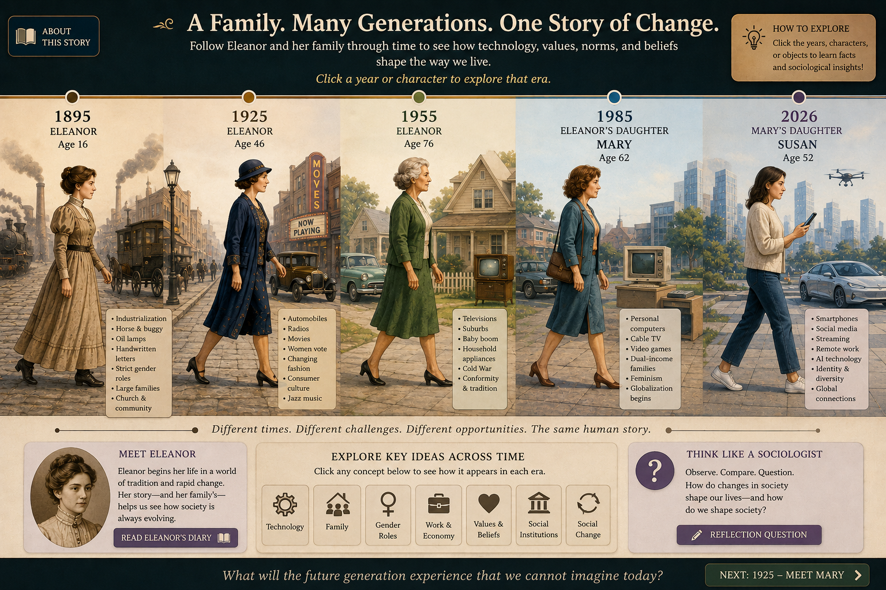

Clarify values
Identify what your society defines as good, fair, necessary, or worth protecting.
Design a society around your values, then use sociology to explain how it would work, who it would serve, what problems it might create, and how it could change.
Final product: 10-slide presentation

The restored model gallery demonstrates a focused claim, applied sociology, APA citations, a purposeful visual, and a meaningful trade-off on each slide.
The Ideal Society Project is a semester-long sociological investigation. Begin with a real social problem. Then return to the same society in every chapter and test your ideas against culture, socialization, deviance, institutions, inequality, and social change.
Identify what your society defines as good, fair, necessary, or worth protecting.
Explain how institutions, roles, norms, and resources would turn those values into social arrangements.
Ask who benefits, who bears costs, what latent problems could appear, and how the society would respond.
Build the assigned slide while studying its chapter. Save the slide, revise it as your understanding grows, and combine all slides for the final submission. Section slides are not submitted separately unless the current Canvas directions say otherwise.
Prompt: How does the sociological imagination help us envision a better society? What social problem inspires your Ideal Society?
Required concepts: sociological imagination, personal troubles and public issues, social structure, and social construction of reality.
Connect an experience or concern to historical conditions, institutions, inequality, technology, or other larger social forces. State the problem your later slides will continue addressing.
Prompt: What are your society’s core values and beliefs? Which sociological theory best explains how it operates?
Possible concepts: culture, values, norms, symbols, roles, social structure, institutions, functionalism, conflict theory, and symbolic interactionism.
Explain how people would recognize these values in everyday rules and behavior. Apply at least one theoretical perspective instead of merely naming it.
Prompt: How does your society teach people its values? What are its main agents of socialization?
Possible concepts: socialization, family, education, peer groups, media, life course, identity, gender roles, resocialization, and hidden curriculum.
Explain how people learn expectations and become participating members. Address how families and institutions support development, guidance, belonging, safety, and the ability to question harmful norms.
Prompt: What counts as deviance in your society? How is social order maintained?
Possible concepts: norms, deviance, conformity, sanctions, formal and informal social control, labeling, strain theory, differential association, and rehabilitation.
Explain how the society balances freedom, safety, equality, and order. Identify who defines deviance and whether responses emphasize punishment, education, treatment, restoration, or prevention.
Prompt: How do family, education, government, economy, religion, health, and other institutions work together to meet social needs?
Possible concepts: social institutions, statuses, roles, social structure, interdependence, manifest functions, latent functions, dysfunctions, power, and the three theoretical perspectives.
Show at least one connection among institutions and predict how a change in one would affect others.
Prompt: How does your society address diversity, inequality, inclusion, and fairness?
Possible concepts: stratification, social class, race, ethnicity, gender, privilege, intersectionality, stereotypes, discrimination, structural inequality, and conflict theory.
Explain how institutions distribute resources, opportunities, power, and prestige. Address both equal treatment and barriers that affect groups differently.
Prompt: How does your society respond to change? What movements, reforms, technologies, or collective actions help it adapt?
Possible concepts: social change, social movements, collective behavior, modernization, innovation, cultural lag, environmental change, and institutional reform.
Explain how your society evaluates new technology and balances change with stability. Include a way residents can challenge an institution that no longer meets social needs.
Prompt: How does your Ideal Society reflect sociological understanding? What lessons apply to real societies today?
Synthesize culture, institutions, inequality, and social change. Revisit the social problem from the Introduction and explain how your thinking developed. Acknowledge at least one trade-off, limitation, or possible unintended consequence.
Use a focused paragraph or short connected paragraphs. The title and reference slides are exceptions.
Define and apply them naturally. Do not submit a vocabulary list.
Cite paraphrased definitions, evidence, examples, statistics, and ideas drawn from sources.
Use a relevant image, photograph, chart, symbol, diagram, or original graphic.
State what your society would do, identify the sociological concept, explain how the concept operates, and analyze a likely consequence. Use your own examples and wording. Do not use direct quotations unless an assignment specifically requires one.
Use the new coursebook as the primary source for concepts taught in the book. Cite outside evidence when you add facts, statistics, policies, or research beyond the chapter.
Social construction describes how shared meanings become embedded in everyday life (Hodgson & Norwood, 2026).
Hodgson and Norwood (2026) explain that technologies become social forces when people build norms and institutions around them.
Hodgson, C., & Norwood, J. (2026). Seeing society: A journey through time, technology, and social reality. https://seeing-society-soc210.carollhodgson.chatgpt.site
Personal photographs, original drawings, concept symbols, maps, charts, screenshots used for analysis, and images that represent your own Ideal Society plan.
When the current course policy permits it, AI may help brainstorm visual possibilities, create an image from your own plan, check grammar, or help you locate research terms.
Do not use AI to write slide content, choose your values, invent your analysis, or complete the sociological reasoning for you.
Follow the current Canvas directions for disclosure or citation of AI-generated material. Verify all facts and citations. You remain responsible for the accuracy, originality, and sociological quality of the presentation.
Create the project in PowerPoint or another presentation program permitted by the current Canvas directions. Submit the finished file in the format required in Canvas. Canvas remains the authority for deadlines, points, file types, and any term-specific changes.